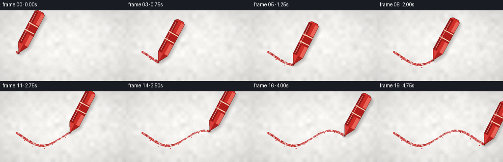
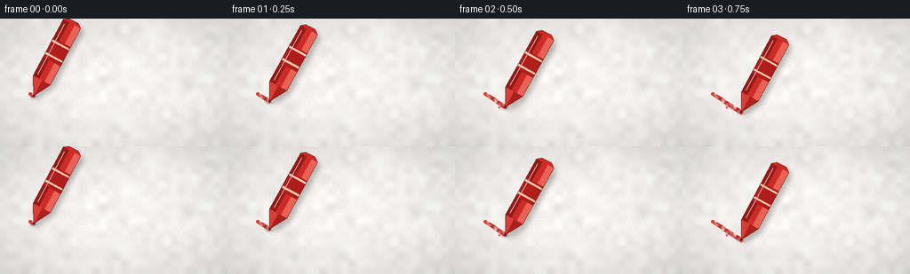

CODING AGENTS AS PIXEL WORLD MODELS
traex/Seed-2.1-Pro-0915 · phygen_033
点击播放 · 原生 RGB 像素
逐轮保存的候选
回放视频、检查图与代码变化。
每份候选均可单独播放。实际图片检查记录在下方工具轨迹中。
候选 01播放与检查图
点击播放 · 原生 RGB 像素


展开代码变化
--- 上一保存版本
+++ 本次保存版本
@@ -0,0 +1,232 @@
+"""Text-to-video generation: a red crayon drawing on rough white paper.
+
+Renders 20 frames at 256x144 (4 fps) deterministically with numpy + PIL.
+Everything is drawn at 2x supersampling and downscaled with LANCZOS.
+"""
+import numpy as np
+from PIL import Image, ImageDraw, ImageFilter
+
+import artifact_io
+
+# ---------------------------------------------------------------- constants
+W, H = 256, 144
+N_FRAMES, FPS = 20, 4.0
+S = 2 # supersampling factor
+SW, SH = W * S, H * S
+SEED = 21033
+rng = np.random.default_rng(SEED)
+
+
+# ---------------------------------------------------------------- helpers
+def path_point(s):
+ """Wavy centerline of the drawing, in final-image coordinates."""
+ x = 34 + 188 * s
+ y = 94 + 16 * np.sin(2 * np.pi * 1.25 * s - 0.6) + 3 * s
+ return np.array([x, y], dtype=float)
+
+
+def path_tangent(s):
+ eps = 1e-3
+ return path_point(min(1.0, s + eps)) - path_point(max(0.0, s - eps))
+
+
+def rotate(points, theta, origin):
+ c, q = np.cos(theta), np.sin(theta)
+ R = np.array([[c, -q], [q, c]])
+ out = []
+ for p in points:
+ x, y = (origin + R @ np.asarray(p)) * S
+ out.extend([float(x), float(y)])
+ return out
+
+
+# deterministic per-sample width jitter without spending RNG calls per frame
+_width_rng = np.random.default_rng(SEED + 7)
+_width_jitter = _width_rng.uniform(-0.9, 0.9, 421)
+
+
+def rng_at_i(i):
+ return _width_jitter[i]
+
+
+# ---------------------------------------------------------------- paper
+def make_paper():
+ base = np.array([246, 245, 242], dtype=float)
+ img = np.tile(base, (SH, SW, 1))
+
+ # fine per-pixel grain
+ img += rng.normal(0, 3.2, (SH, SW, 1))
+
+ # low-frequency blotches
+ low = rng.normal(0, 1, (SH // 16, SW // 16))
+ low = np.array(Image.fromarray(low).resize((SW, SH), Image.BICUBIC))
+ img += low[..., None] * 4.5
+
+ paper = Image.fromarray(np.clip(img, 0, 255).astype(np.uint8))
+ draw = ImageDraw.Draw(paper, "RGBA")
+
+ # faint paper fibers, mostly horizontal
+ for _ in range(110):
+ x, y = rng.uniform(0, SW), rng.uniform(0, SH)
+ length = rng.uniform(8, 34)
+ ang = rng.normal(0, 0.35)
+ dx, dy = np.cos(ang) * length, np.sin(ang) * length
+ shade = int(rng.uniform(195, 222))
+ draw.line([(x, y), (x + dx, y + dy)],
+ fill=(shade, shade - 3, shade - 8, 14), width=1)
+
+ # gentle vignette
+ yy, xx = np.mgrid[0:SH, 0:SW]
+ d = np.sqrt(((xx - SW / 2) / (SW / 2)) ** 2
+ + ((yy - SH / 2) / (SH / 2)) ** 2)
+ factor = np.clip(1 - 0.06 * (d / 0.95) ** 2, 0.86, 1.0)
+ arr = np.asarray(paper).astype(float) * factor[..., None]
+ return np.clip(arr, 0, 255).astype(np.uint8)
+
+
+paper = make_paper()
+
+# static spatial grain used to roughen the waxy stroke (no temporal shimmer)
+_g = rng.normal(0, 1, (SH, SW))
+_g8 = np.clip(_g * 40 + 128, 0, 255).astype(np.uint8)
+grain = np.array(Image.fromarray(_g8).filter(ImageFilter.GaussianBlur(1.6)),
+ dtype=float)
+grain = (grain - grain.mean()) / (grain.std() + 1e-8)
+
+# ---------------------------------------------------------------- crumbs
+CRUMBS = []
+for s in np.linspace(0.08, 0.95, 9):
+ p = path_point(s) * S
+ CRUMBS.append((s, p[0] + rng.uniform(-9, 9),
+ p[1] + rng.uniform(5, 11), rng.uniform(1.4, 2.6)))
+
+
+def stroke_layer(progress, tip_world):
+ """Partial waxy red stroke revealed up to `progress`."""
+ mask = Image.new("L", (SW, SH), 0)
+ md = ImageDraw.Draw(mask)
+ n_sample = 420
+ for i in range(n_sample + 1):
+ s = i / n_sample
+ if s > progress:
+ break
+ p = path_point(s) * S
+ # pressure varies the deposited width
+ width = 7.0 + 1.7 * np.sin(s * 9.0) + rng_at_i(i)
+ r = max(2.0, width / 2)
+ md.ellipse([p[0] - r, p[1] - r, p[0] + r, p[1] + r], fill=255)
+
+ for s, cx, cy, r in CRUMBS:
+ if s <= progress:
+ md.ellipse([cx - r, cy - r, cx + r, cy + r], fill=255)
+
+ # dark contact mark right under the crayon tip
+ md.ellipse([tip_world[0] - 3, tip_world[1] - 2,
+ tip_world[0] + 3, tip_world[1] + 3], fill=255)
+
+ m = np.asarray(mask).astype(float) / 255.0
+ # rough waxy edges and tiny paper gaps inside the stroke
+ alpha = m * np.clip(0.72 + 0.28 * grain, 0.0, 1.0)
+ alpha[grain < -1.35] *= 0.45
+
+ contact = np.zeros((SH, SW), dtype=bool)
+ x0, y0 = int(tip_world[0]), int(tip_world[1])
+ contact[max(0, y0 - 2):y0 + 3, max(0, x0 - 3):x0 + 4] = True
+
+ rgb = np.zeros((SH, SW, 3), dtype=float)
+ base_red = np.array([196, 42, 38], dtype=float)
+ rgb[:] = base_red
+ rgb += (14 * grain)[..., None] # lightness variation
+ rgb[grain > 1.6] *= 0.7 # dark wax speckles
+ rgb[contact] = np.array([120, 22, 20]) # contact point
+
+ layer = np.zeros((SH, SW, 4), dtype=np.uint8)
+ layer[..., :3] = np.clip(rgb, 0, 255).astype(np.uint8)
+ layer[..., 3] = np.clip(alpha * 255, 0, 255).astype(np.uint8)
+ return Image.fromarray(layer, "RGBA")
+
+
+# ---------------------------------------------------------------- crayon
+def crayon_layers(theta, tip_world):
+ """Return (shadow RGBA image, crayon RGBA image)."""
+ # local geometry: u along the axis from the tip, v across the body
+ half_w = 11.0
+ cone_u, body_u, end_u = 20.0, 92.0, 96.0
+ silhouette = [
+ (0, 0),
+ (cone_u, -half_w), (body_u, -half_w),
+ (end_u, -6), (end_u, 6),
+ (body_u, half_w), (cone_u, half_w),
+ ]
+ world_sil = rotate(silhouette, theta, tip_world / S)
+ world_pts = list(zip(world_sil[0::2], world_sil[1::2]))
+
+ shadow = Image.new("RGBA", (SW, SH), (0, 0, 0, 0))
+ sd = ImageDraw.Draw(shadow)
+ sd.polygon([(x + 6, y + 9) for x, y in world_pts], fill=(40, 30, 25, 70))
+ shadow = shadow.filter(ImageFilter.GaussianBlur(5))
+ # contact shadow at the tip
+ sd2 = ImageDraw.Draw(shadow)
+ tx, ty = tip_world
+ sd2.ellipse([tx - 8, ty - 3, tx + 8, ty + 5], fill=(40, 30, 25, 90))
+ shadow = shadow.filter(ImageFilter.GaussianBlur(2.5))
+
+ cray = Image.new("RGBA", (SW, SH), (0, 0, 0, 0))
+ cd = ImageDraw.Draw(cray)
+
+ def poly(local_pts, fill):
+ cd.polygon(rotate(local_pts, theta, tip_world / S), fill=fill)
+
+ def line(local_pts, fill, width=1):
+ cd.line(rotate(local_pts, theta, tip_world / S), fill=fill, width=width)
+
+ base = (205, 44, 38, 255)
+ dark = (150, 26, 24, 255)
+ light = (233, 98, 86, 255)
+
+ # body silhouette
+ poly(silhouette, base)
+ # side facets on the cylindrical body
+ v1, v2 = -3.6, 3.6
+ poly([(cone_u, -half_w), (body_u, -half_w), (body_u, v1), (cone_u, v1)], dark)
+ poly([(cone_u, v2), (body_u, v2), (body_u, half_w), (cone_u, half_w)], light)
+ # cone facets
+ poly([(0, 0), (cone_u, 0), (cone_u, half_w)], (172, 31, 28, 255))
+ poly([(0, 0), (cone_u, -half_w), (cone_u, 0)], (216, 62, 56, 255))
+ # paper wrapper band with thin stripes
+ u0, u1 = 44, 68
+ poly([(u0, -half_w), (u1, -half_w), (u1, half_w), (u0, half_w)],
+ (176, 30, 28, 255))
+ for u in (u0 + 4, u1 - 4):
+ poly([(u, -half_w), (u + 2, -half_w), (u + 2, half_w), (u, half_w)],
+ (240, 205, 175, 255))
+ # glossy highlight along the body
+ line([(cone_u + 4, -7), (body_u - 4, -7)], (248, 158, 148, 150), width=2)
+ # worn wax point at the contact
+ cd.ellipse([tx - 2, ty - 2, tx + 2, ty + 2], fill=(120, 20, 18, 255))
+ # dark outline
+ cd.line(world_sil + world_sil[:2], fill=(92, 16, 14, 255), width=1)
+ return shadow, cray
+
+
+# ---------------------------------------------------------------- frames
+frames = []
+for i in range(N_FRAMES):
+ progress = 0.02 + 0.96 * i / (N_FRAMES - 1)
+
+ tip = path_point(progress)
+ tilt = np.deg2rad(-62 + 1.1 * np.sin(i * 0.9)) # slight hand wobble
+ tip_world = tip * S
+
+ frame = Image.fromarray(paper).convert("RGBA")
+ shadow, cray = crayon_layers(tilt, tip_world)
+ frame.alpha_composite(shadow)
+ frame.alpha_composite(stroke_layer(progress, tip_world))
+ frame.alpha_composite(cray)
+
+ rgb = frame.convert("RGB").resize((W, H), Image.LANCZOS)
+ frames.append(np.asarray(rgb, dtype=np.uint8))
+
+frames = np.stack(frames)
+artifact_io.save(frames, ".")
+print("saved", frames.shape, "frames")
可观测工具轨迹
实际执行的命令与返回图片。
命令 1exit 0
/bin/bash -lc 'cat prompt.txt; echo "---"; cat GENERATION_RULES.md; echo "---"; cat task_spec.json; echo "---"; ls -la'
命令 2exit 0
/bin/bash -lc 'cat artifact_io.py'
命令 3exit 1
/bin/bash -lc 'cd . && python generate.py && ls -la'
命令 4exit 1
/bin/bash -lc 'cd . && python generate.py && ls -la'
命令 5exit 0
/bin/bash -lc 'cd . && python generate.py && ls -la frames | head -8 && ls -la'
保存候选 1 份；完成命令 5 次；可验证图片返回 0 张。原始 API 响应与完整日志保留在本地。